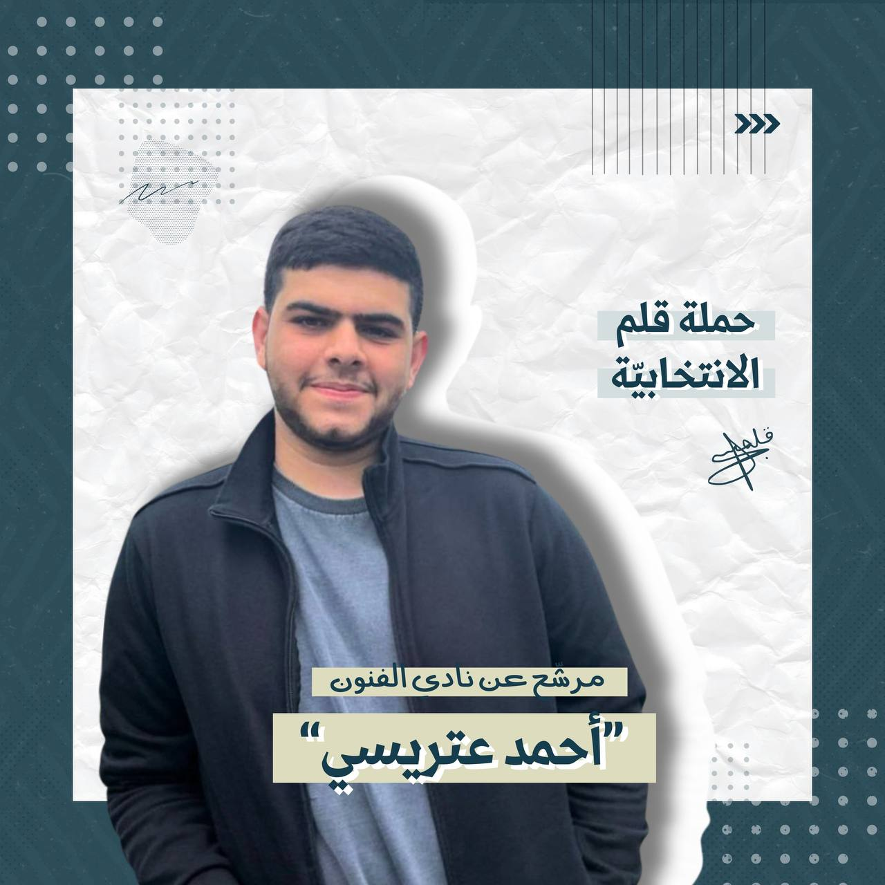
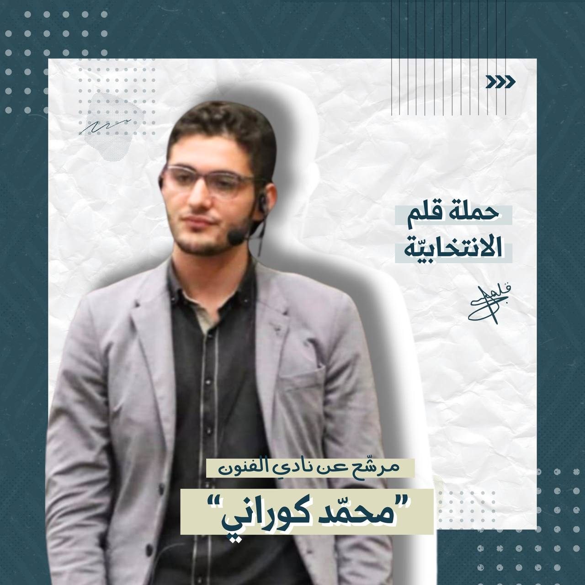
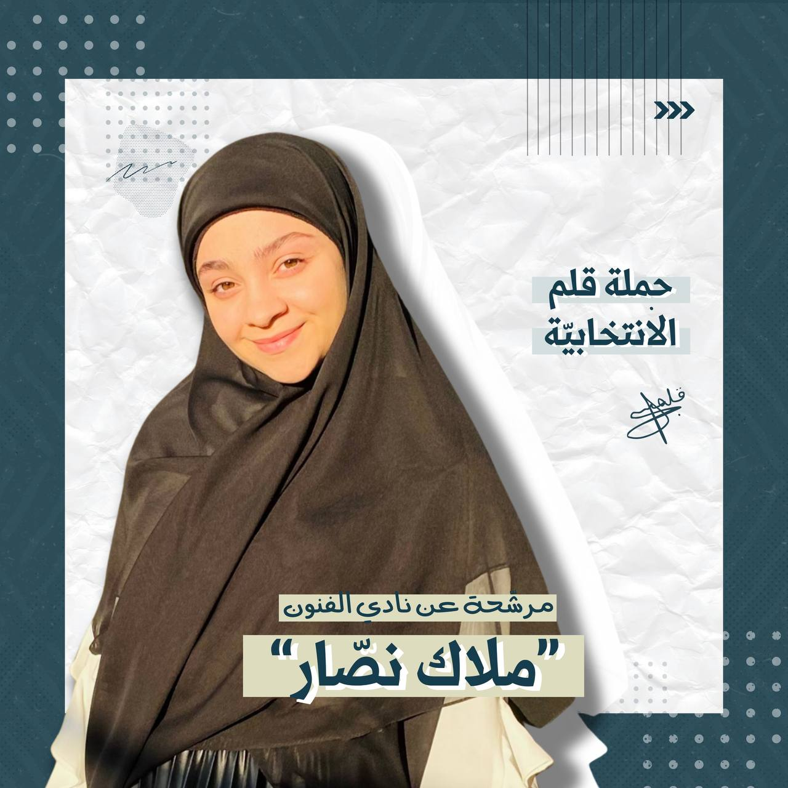
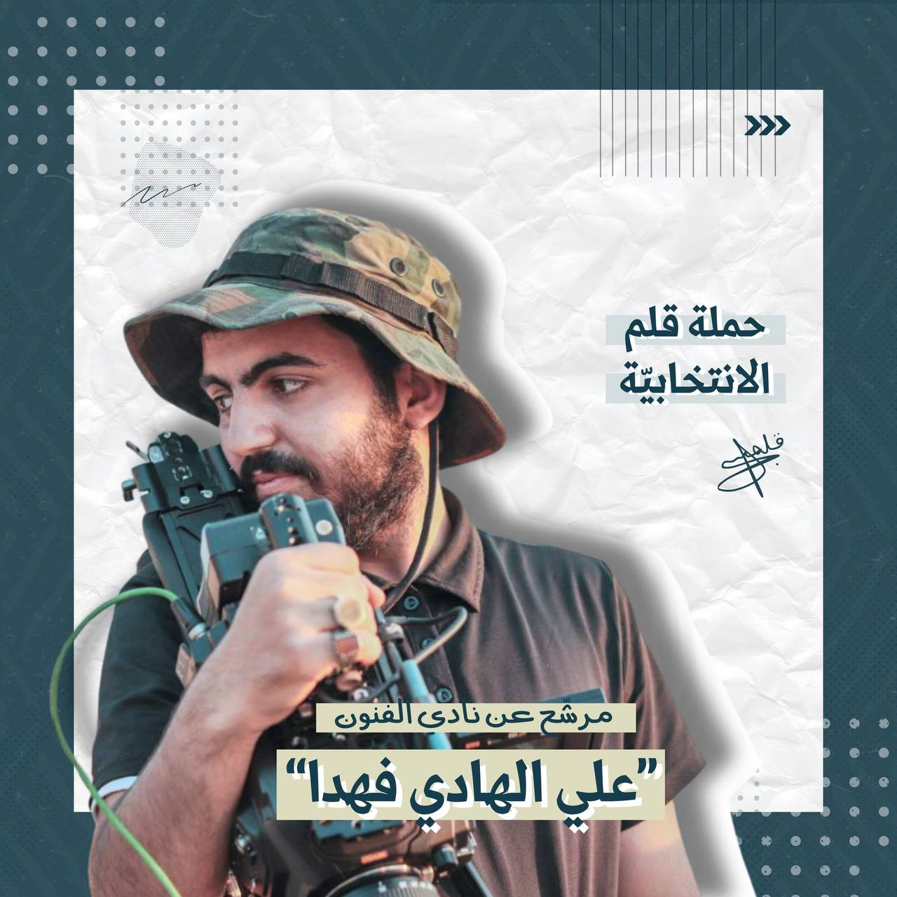
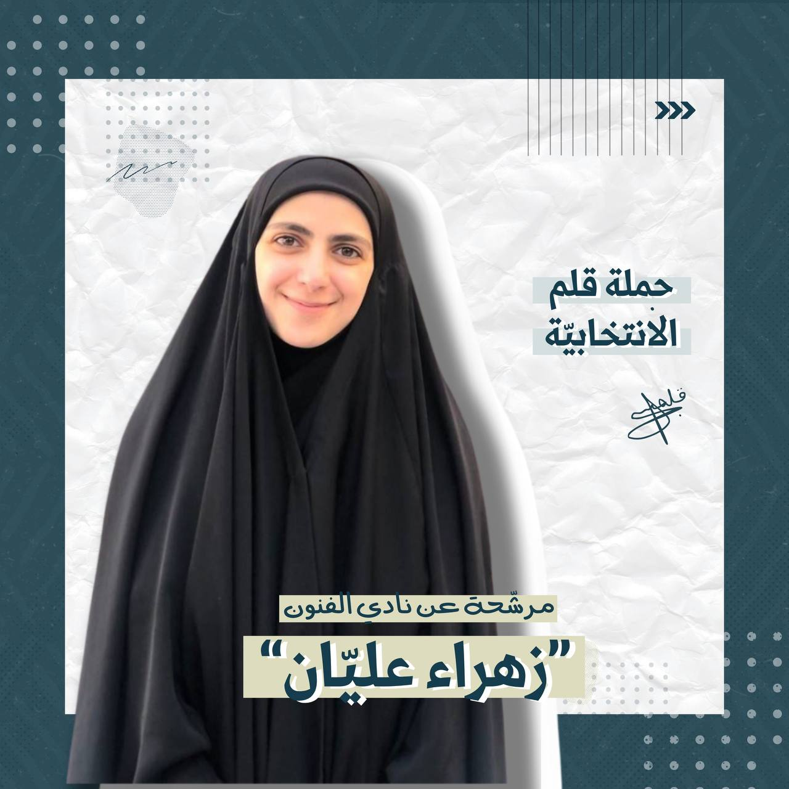

كلية الاعلام و الفنون
السنة الثانية
دورات:
٢٠١٨: دورة تصوير مع وكالة مهدي للاعلام الكشفي
٢٠١٩: دورة مونتاج مع معهد CIS
٢٠٢٠: تصوير وثائقي لانفجار ٤ آب
٢٠٢١: دخول الجامعة اللبنانية كلية ادارة الاعمال، اختصاص التسويق
دورة تسويق الكتروني في معهد CIS

هندسة
السنة ٢
قائد أمانة الفنون فوج الإمام الرضا(ع) في جميعة كشافة الإمام
المهدي(عج)
مشاركات عديدة في المسرحيات والأفلام القصيرة
تنظيم احتفالات
قائد كشفي
لاعب كاراتيه
استاذ شطرنج
ممثل

الكلية الإعلام
السنة الثانية
ابرز الصفات:
إجتماعية -متفاعلة - متفهّمة - متسامحة - ايجابية ومبادرة
عمل:
أنشطة كشفية
خاضعة لعدّة ورش فنيّة
أتمنى أن أكون جزء من هذه العائلة والسعي لإنجاح هذا النادي وتطويره وأن
نقوم معاً بأنشطة مميزة ومفيدة

كلية الاعلام و الفنون
سنة ثالثة
هندسة صوت
اخراج
تصوير
بث مباشر
ايديتنغ
غرافيكس
تسويق
ادارة سوشيال ميديا
عمل بالمركز الاعلامي لنادي العهد
مشارك بمعرض ارضي
مشارك بنداء الاقصى بالعراق
DOP layla movie
مخرج عمل شارك النعم للامداد بشهر رمضان
مهندس صوت بفيلم بهارات
مهندس صوت بوثائقي لآخر نفس
مصور بفيلم مسألة وقت
مهندس صوت بفيلم كاسبر
مهندس صوت بوثائقيات و افلام كثيرة بمشاريع التخرج
DOP فيديو كليب في الضاحية
اعطاء دورة تصوير لمدة ٣ ايام بفوج الامام المهدي عج الغبيري و باماكن
ثانية
مشارك بحملة على حب فاطمة
و حاليًا اعمل على وسائل التواصل بمكانين

كلية الاعلام و الفنون
سنة ثالثة
الصفات:
مبادرة
متعاونة
مندفعة
مهتمة بالامور الفنية
قارئة مثقفة
اجتماعية
نشيطة
طموحة
دورات:
دورة جنود
دورة قائدة
تجارب وأعمال:
عضوة سابقة في نادي بسمة
موهبة في الرسم
موهبة بالتصوير و المونتاج و الموشن غرافيكس
موهبة في الكتابة
متطوعة في Free palestine Tv
موهبة في التخييط و الكروشيه و مشاركة في معرض ارضي و معارض اخرى للاعمال
اليدوية
قائدة و اعلامية في الكشاف
مشاركة في تغطيات اعلامية
مشاركة في العديد من المشاريع الجامعية